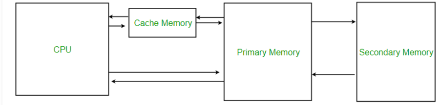

Cache
Cache memory, also called cache, supplementary memory system that temporarily stores frequently used instructions and data for quicker processing by the central processing unit (CPU) of a computer. It holds a copy of only the most frequently used information or program codes stored in the main memory. The smaller capacity of the cache reduces the time required to locate data within it and provide it to the CPU for processing.
Levels of Memory
Level 1 or Register – It is a type of memory in which data is stored and accepted that are immediately stored in CPU. Most commonly used register is accumulator, Program counter, address register etc.
Level 2 or Cache memory – It is the fastest memory which has faster access time where data is temporarily stored for faster access.
Level 3 or Main Memory – It is memory on which computer works currently. It is small in size and once power is off data no longer stays in this memory.
Level 4 or Secondary Memory – It is external memory which is not as fast as main memory but data stays permanently in this memory.

Types of Cache memory
L1 Cache: The primary or L1 cache is the fastest and the smallest. It is present inside the CPU itself and works with almost the same speed of the processors. Some L1 caches are further divided into two parts. Data cache to store data. Instruction cache to store instructions
L2 Cache: The level 2 cache could both be inside or outside the processor, and there might be separate L2 caches for different cores, or all of the cores might share the same amount of L2 cache.
L3 Cache: The third kind is available in only the high-performance CPUs, and works to balance and boost the working of the other 2 kinds of caches. It has a higher capacity, between 8 MB and 50 MB roughly, but is slower than the other two.